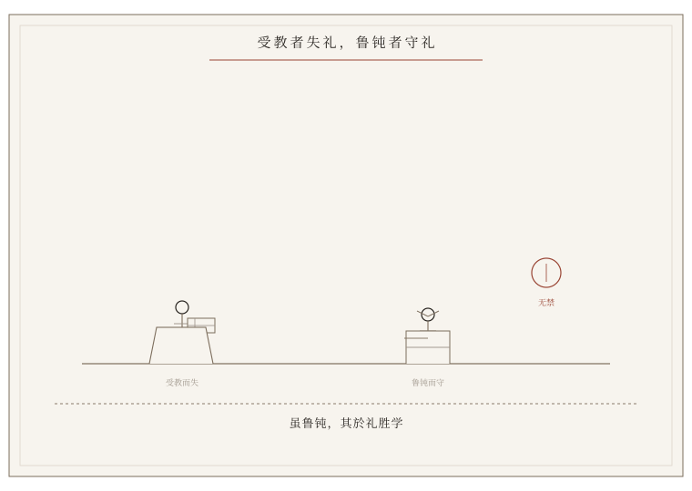

檀弓下 · 四·八十八 · 第 413 课
叔仲皮学子柳。叔仲皮死，其妻鲁人也，衣衰而缪绖。叔仲衍以告，请繐衰而环绖。曰：「昔者吾丧姑姊妹亦如斯，末吾禁也。」退，使其妻繐衰而环绖。
说什么事：叔仲皮教其子子柳学礼。皮死，子柳之妻是个鲁钝妇人，却身穿齐衰、首服缪绖——正合士妻为舅姑之服。皮的弟弟衍以此告子柳，说是「非礼」，请改为繐衰环绖。子柳遂请于衍，衍答：「从前我丧姑姊妹也这样穿，没有人禁止我。」子柳退而令其妻改着繐衰环绖。
落在哪一层：以「受教者不知礼，鲁钝者反知礼」为界。礼不在学，在守。
为何编在此位：上是「评人」，此是「评学」。一评其举，一评其服。
【经】叔仲皮学子柳。叔仲皮死，其妻鲁人也，衣衰而缪绖。叔仲衍以告，请繐衰而环绖。曰：「昔者吾丧姑姊妹亦如斯，末吾禁也。」退，使其妻繐衰而环绖。
【注】叔仲皮，鲁叔孙氏之族。学，教也。子柳，仲皮之子。／衣，当为齐，坏字也。缪，当为「不樛垂」之樛。士妻为舅姑之服也。言虽鲁钝，其於礼胜学。／衍，盖皮之弟。／繐衰，小功之缕，而四升半之衰。环绖，吊服之绖。时妇人好轻细，而多服者。／末，无也。言无禁我，欲其言行。／妇以诸侯之大夫为天子之衰、吊服之绖服其舅，非。
【疏】此一节论子柳失礼之事。○叔仲，氏也，皮是名。言叔仲皮教训其子，子柳虽受父教，犹不知礼。在后叔仲皮死，其妻鲁人也，其子柳之妻是鲁钝妇人。虽曰鲁钝，犹知为舅姑而身著齐衰，而首服缪绖也。谓绞麻为绖。○「叔仲衍以告」者，衍是皮之弟、子柳之叔。既见当时妇人好尚轻细，见子柳之妻身著齐衰，以告子柳：汝妻何以著非礼之服？子柳见时皆尔，亦以为然，以妻非礼，遂请於衍，欲令其妻身著繐衰，首服环绖。衍答子柳云：昔者吾丧姑姊妹亦如斯。斯，此也。谓如此繐衰环绖。○「末吾禁也」者，末，无也。我著繐衰环绖，无人於吾而相禁者，既无禁，明其得著繐衰。衍告子柳如此。子柳得衍言乃退，使其妻著繐衰而环绖。○注「衣当」至「胜学」。○正义曰：《丧服》妇为舅姑齐衰，无「衣衰」之文，故知「衣」是「齐」字，但「齐」字坏灭而有「衣」在。云「缪读为不樛垂之樛」者，读从《丧服传》「不樛垂」之樛。樛谓两股相交也，五服之绖皆然，唯吊服环绖不樛耳。云「士妻为舅姑之服也」者，以子柳以仲叔为氏，则非庶人也，又《春秋》叔仲皮等经传无文，则非卿大夫也，故以为「士妻」。○注「繐衰」至「服之」。○正义曰：知「繐衰，小功之缕，而四升半」者，约《丧服传》文。云「环绖，吊服之绖」者，约《周礼·司服》「首服弁绖」。郑注《杂记》云：「环绖者，一股，所谓缠绖也，缠而不樛。」是环绖不樛也。云「时妇人好轻细，而多服此」者，若时人不服此服，则衍与子柳应知繐衰为非。今子柳既受学於父，不肯粥庶弟之母，非是下愚而不知其非礼，明当时皆著轻细故也。○注「妇以」至「舅非」。○正义曰：「以诸侯之大夫为天子之衰」，据《丧服》谓繐衰也。云「吊服之绖」者，谓环绖，既以此服服舅，故云非也。
叔仲皮 鲁叔孙氏之族，叔仲氏。
学子柳 「学」，教也。教其子子柳。
其妻鲁人也 注云「其子柳之妻是鲁钝妇人」。鲁，谓鲁钝，非鲁国。
衣衰 注云「衣，当为齐，坏字也」。即齐衰。
缪绖 注云「缪当为樛」。樛，两股相交。丧绖绞麻使相交。
繐衰 注云「小功之缕，而四升半之衰」。较轻之衰。
环绖 注云「吊服之绖」，一股缠而不樛。
以告 衍告子柳，言其服非。
末吾禁也 末，无也。谓无人禁止我。
退 子柳退而改之。
叔仲皮教其子子柳。叔仲皮死，子柳之妻是个鲁钝妇人，却身穿齐衰、首服樛绖。叔仲衍以此告子柳，请改为繐衰环绖。衍说：「从前我丧姑姊妹也这样穿，没有人禁止我。」子柳退而令其妻改着繐衰环绖。
此章一事两服。
一服合礼而人以为非，一服非礼而人以为通。
关键只在一句：「末吾禁也」——没有人禁止我。
第一层 受教者反不知礼 注云「子柳虽受父教，犹不知礼」。
而守礼的是那个「鲁钝」的妇人。 注云「虽鲁钝，其於礼胜学」。
「胜学」二字，是这一章的判词。 学而不守，不如不学而守。
第二层 两服之别 齐衰樛绖者，士妻为舅姑之正服。
繐衰环绖者，吊服——注云「以诸侯之大夫为天子之衰、吊服之绖服其舅，非」。
一个用丧服，一个用吊服。 前者为亲，后者为宾。
第三层 「时妇人好轻细」 注云「时妇人好轻细，而多服者」。
疏因此断定：子柳不是不知，是随俗。 「明当时皆著轻细故也」。
第四层 「末吾禁也」的逻辑 无人禁止，故我以为可。
此一语，把「违礼」偷换成「风俗」，把「我以为」偷换成「大家如此」。
礼的边界，从来不靠「有没有人管」来定。
第五层 子柳之退 「退，使其妻繐衰而环绖」——一个「退」字，写他改得快。
改得快，正是因为他本来就不曾守住。 守者不待告而改。
第六层 此章之分寸 礼有定服，不以时俗为转移。
「鲁钝」二字用在此处最重。 钝者守其旧，敏者逐其新。
与今日何干 今之改制度者，常以「大家都在做」「没人禁止」为据。
此章给一句：没有人禁止，不等于礼所许。
| 左 | 右 |
|---|---|
| 叔仲皮学子柳 | 教其子 |
| 皮死 | 舅死当服 |
| 其妻鲁钝 | 反知礼 |
| 齐衰樛绖 | 士妻正服 |
| 衍以告 | 言其非 |
| 繐衰环绖 | 吊服，非丧服 |
| 末吾禁也 | 无禁即谓可 |
| 退而使改 | 守者不待告 |
| 礼胜学 | 守胜知 |
画一幅极简的丧服辨识场景，视点平视。画面中部一条水平地面线。左侧站一男子，身形端直，双手在胸前捧一卷书册，其下画一件叠放的衣形，衣形中段被一道短断口划开。右侧站一妇人，身形略矮，身穿宽大的丧服（长衣加两条斜袖），头上画一道由两股相交的绖（两条短线交叉成结）。妇人右上方画一个空着的虚线圈，圈内不画任何物。左右两人之间不画连线。不画文字。赭色只用在那个虚线圈上。
